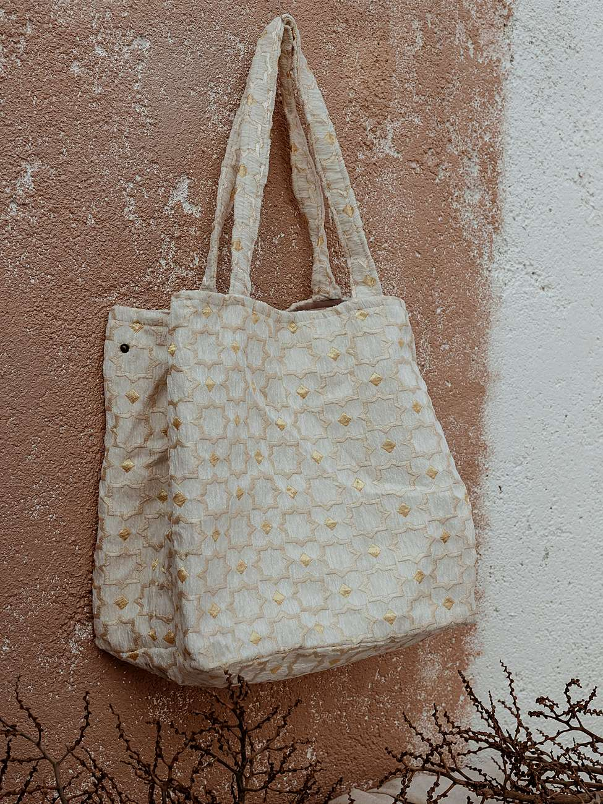
Cabas en velours
Inspirés des tapis berbères : un joli format fourre-tout, des boutons-pression sur les côtés et surtout, plein de place
.
Artisanat marocain · Saint-Denis
« Vous faire voyager sans quitter votre intérieur. »— Le Souk, sur Instagram
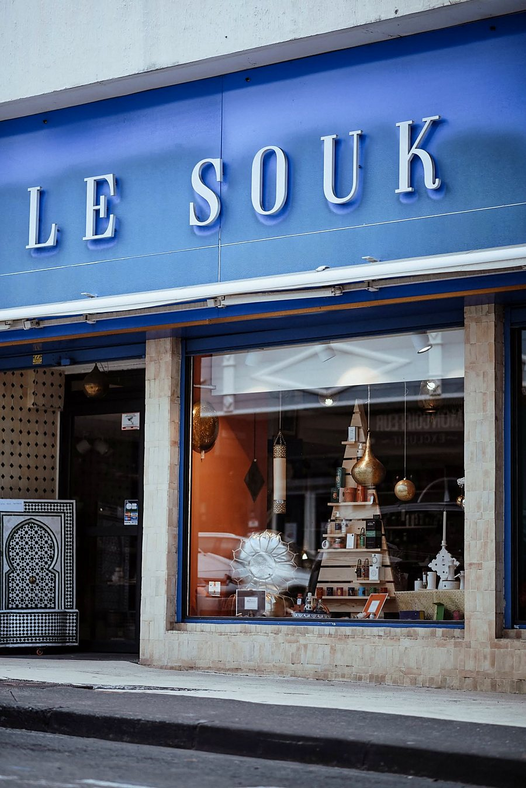
Ce qui nous anime
Les mots du Souk, publiés le 15 mai 2026 : « Voilà ce qui nous anime au quotidien. »
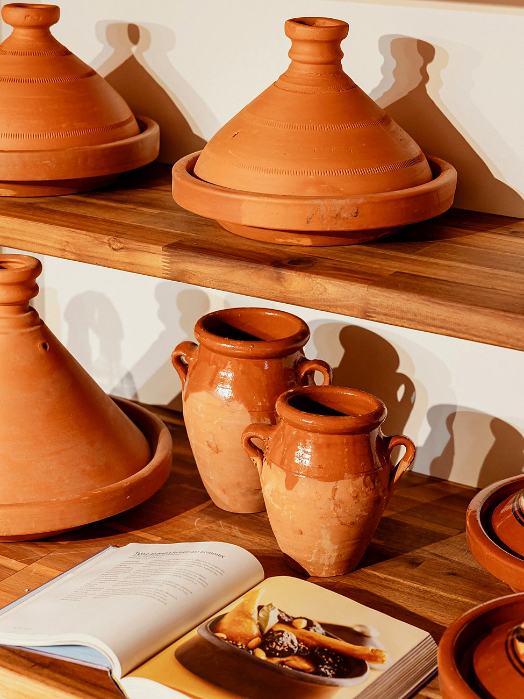
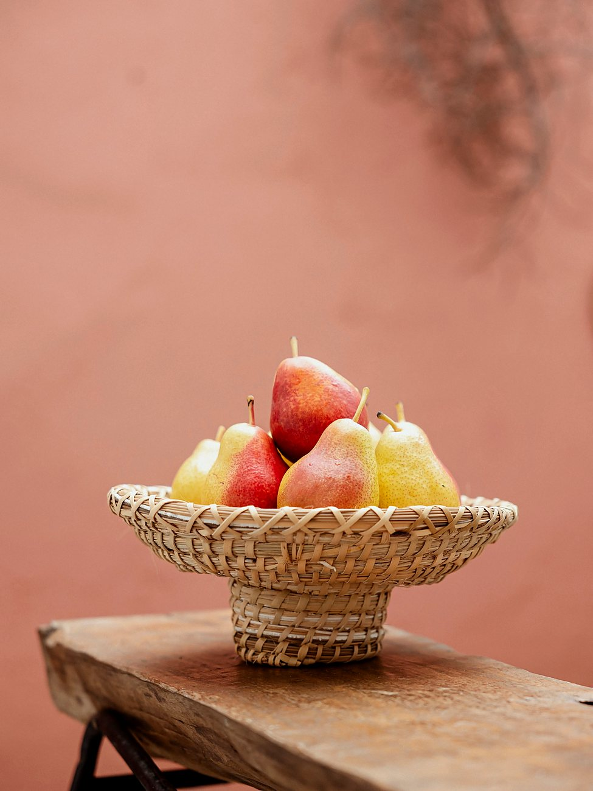
Tout juste arrivé
Début octobre, la boutique a fermé quelques jours « pour une très bonne raison » : se remplir de nouvelles pièces, de nouvelles couleurs, de nouvelles matières, tout juste ramenées du Maroc. Le Souk a rouvert le 8 octobre. Voici ce qui est arrivé depuis.

Inspirés des tapis berbères : un joli format fourre-tout, des boutons-pression sur les côtés et surtout, plein de place
.
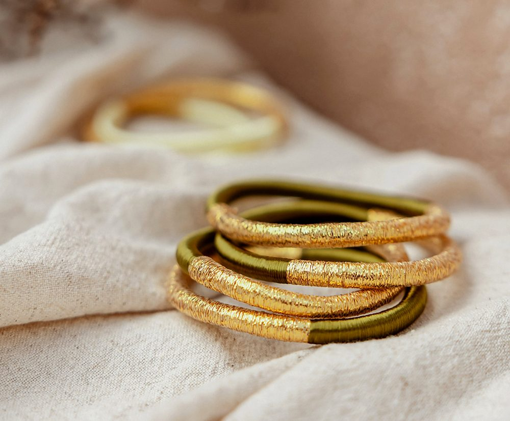
À accumuler au poignet et à mélanger selon ses envies. Entre le vert olive et l'écru, notre cœur balance…
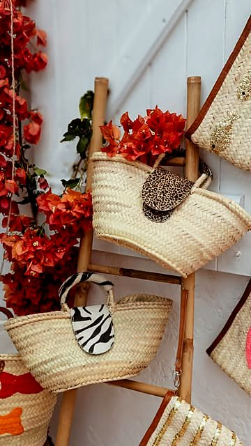
De nouvelles formes, de nouveaux modèles : On aurait peut-être dû prévoir un peu plus de place…
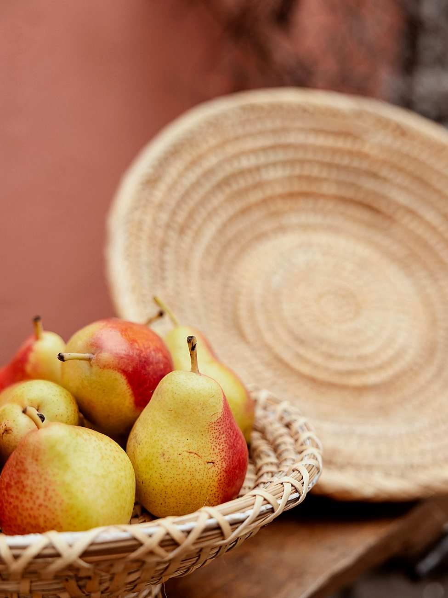
Tressées, avec leur large plateau, disponibles en plusieurs formats. Et si on laissait les fruits s'occuper de la déco ?
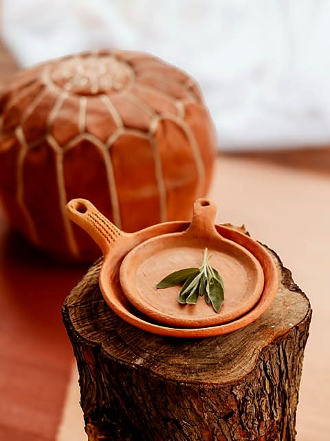
Poêles et tajines façonnés par des artisans marocains, pour une cuisine plus traditionnelle. Le conseil de la maison : privilégier une cuisson douce.
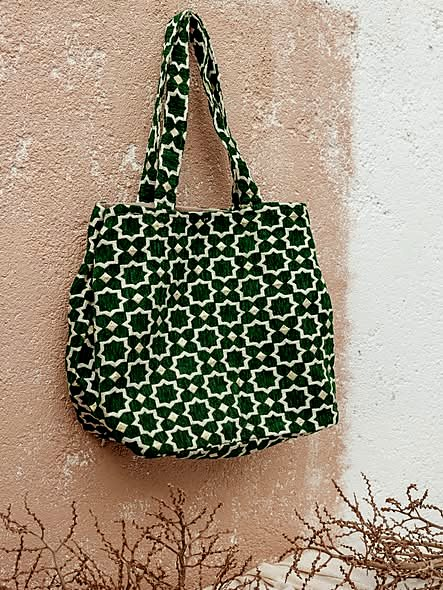
Le cabas en velours existe en plusieurs coloris, pour vous accompagner dans vos journées bien remplies
.
Dans la boutique
« Le bleu Majorelle s'invite à table » : les assiettes Fassia et le bol Apéritivo de la collection Empreinte bleu Majorelle de Chabi Chic, présentés en juillet 2026.
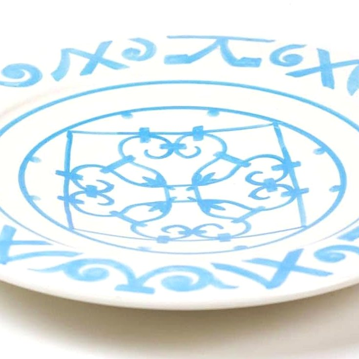
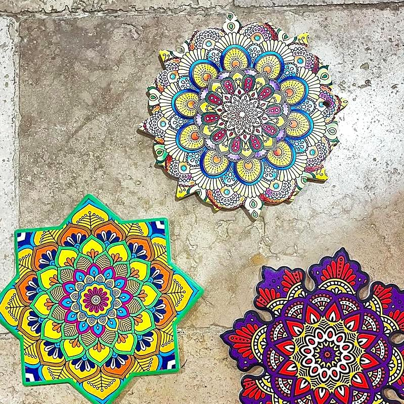
Flâner
Faites glisser du doigt →
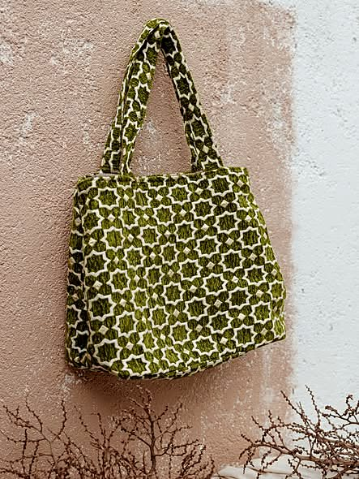
Offrir pour Noël
Cette année, glissez un peu de Maroc sous le sapin. Artisanat, décoration, cosmétiques, idées cadeaux : demandez conseil au Souk pour composer un cadeau avec ce qui vous plaît en boutique : une pièce d'art de table, une jolie corbeille, un cabas, quelques bracelets…
Réponse directe de la boutique sur WhatsApp, au 0692 51 14 11.
Venir au Souk